Deep Learning
분류
1. 분류 하기
- 입력을 받아 몇개의 그룹으로 분류한다.
크기 --> [분류기] --> 익었다 분류
귤은 내가 기준을 찾았다 - 직접 코딩한 알고리즘
사과는 기계가 기준을 찾았다 - 기계가 찾은 알고리즘
하지만 둘다 목적과 쓰임새는 동일하다.
용어
- 분류를 위해 '크기를 재서 기준 크기를 가지고 구별' <-- Model
- 학습 시키려면 사과 2상자가 필요, 익은 상자, 안익은상자 <- Training set
- 여러번 반복해서 <- iteration, step, epoch
- 원하는 기준 크기를 찾아낸다 <- learning, training
- 그리고 그분 안된 바구니에 적용 <- test set, evaluation set
2. 분류하는 선
Training set으로 100% 하더라도 test set 은 결과가 안좋을 수도 있다.
$$
w_1x_1 + w_2x_2=b
$$
크기 정도(x1) 하고 색깔 정도(x2)를 합쳐서 3.5(b)정도 인 것
$$
x_1 + x_2 = 3.5
$$
선을 표현하는 w_1, w2, b를 찾는 것
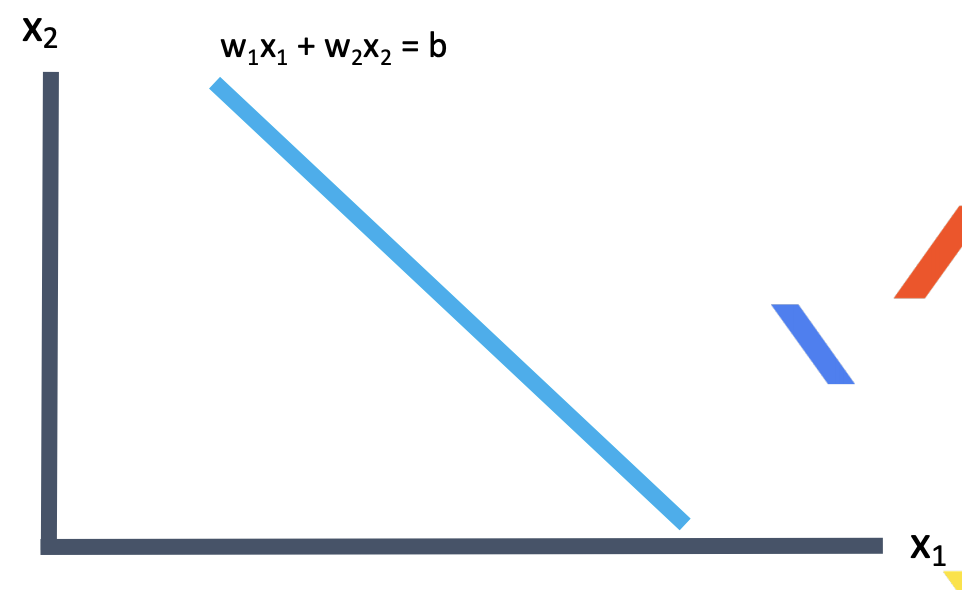
3. 분류하는 선을 찾자
- 선식의 다른 표현
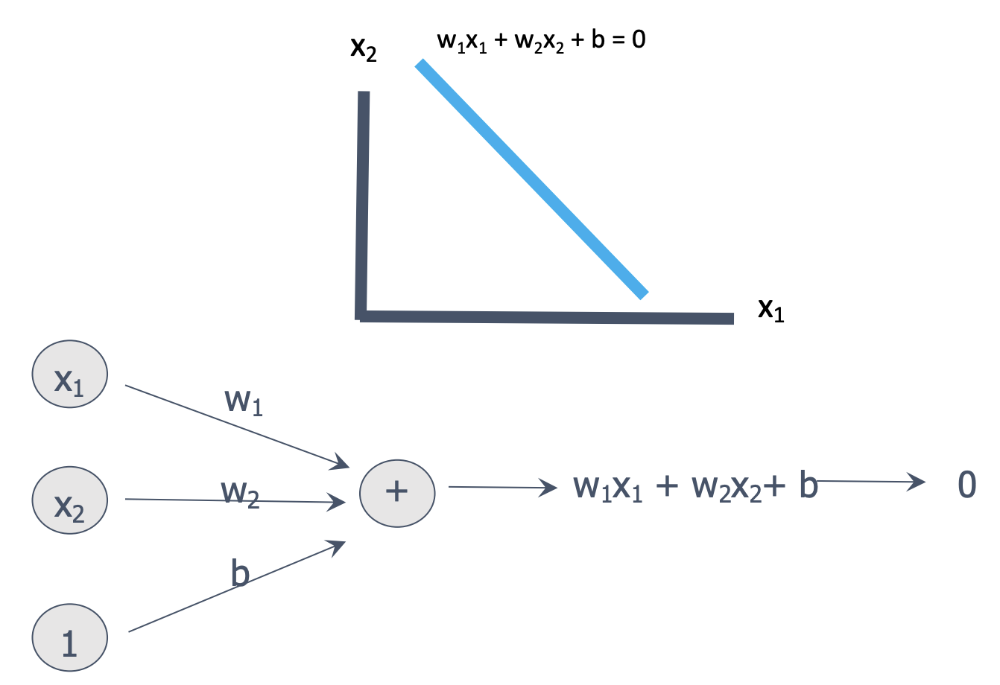
크기가 3, 색깔이 2. 계산값은 1.5 -> 0보다 크다. 선 우측에 있다.
크기가 1, 색깔이 1, 계산값은 -1.5 -> 0보다 작다. 선 좌측에 있다.
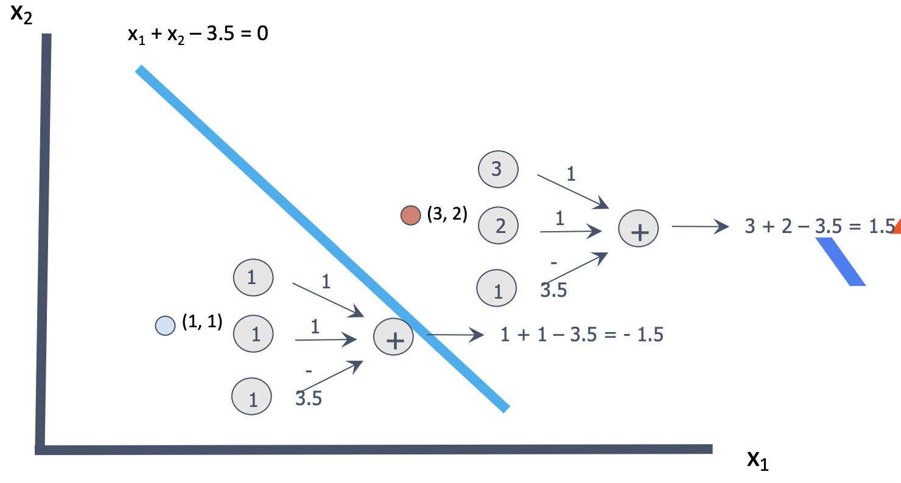
잘못된 분류
- 크기가 9, 색깔이 1 -> 안익었으니 계산값이 0보다 작아야 하는데 크다.
1) 선 조정이 필요하다.
선을 나타내는 1, 1, -3.5의 값을 조정해서 계산 값이 0보다 작게 해야 한다.
계산 값에 많은 영향을 끼치는 크기(9)의 것을 색깔(1)보다 더 크게 조정하자.
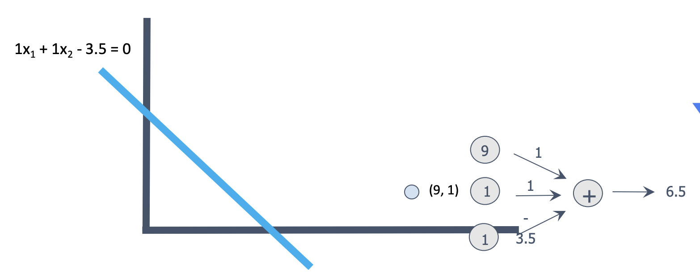
2) 선 조정 아이디어
- 조정값 = 오차 입력값 학습율
조정된 크기비중 = 이전 크기 비중 -> ( 1 9 0.1 )
조정된 색깔비중 = 이전 색깔 비중 -> ( 1 1 0.1 )
조정된 기준값 = 이전 기준값 -> ( 1 1 0.1 )
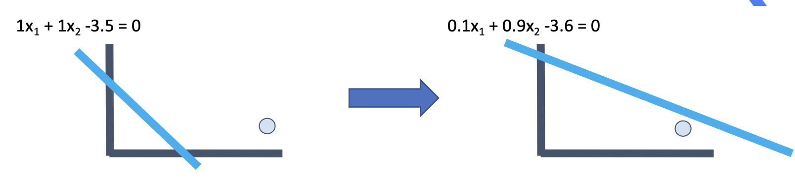
3) 선을 찾을 수 있다.
- 간단한 로직으로 선을 찾을 수 있고, 학습할 수 있다.
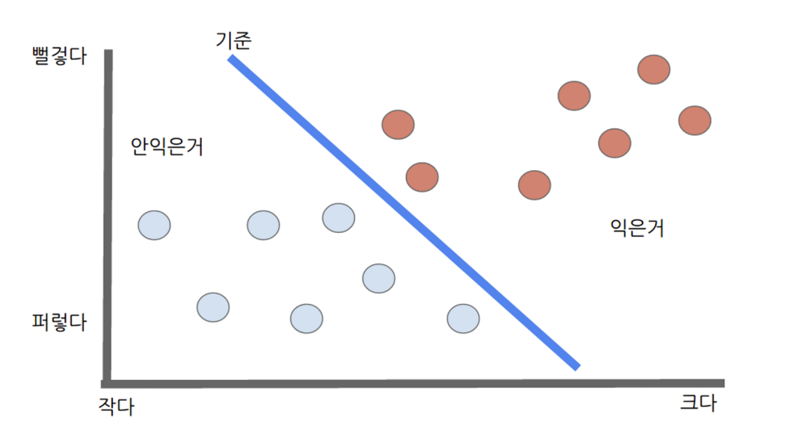
4) 용어
크기에다가 색깔을 추가하니 더 잘된다. <- 크기, 색깔을 입력, 특질(feature)라 한다.
각 사과 마다 2개 값의 특질이 있다. 크기 3, 색깔 2 <- 입력 벡터 혹은 특질 벡터라 한다.
사과 예의 경우 2개 특질(크기, 색깔)을 사용했다. <- 입력 벡터가 2차원.
학습을 한다는 건 선을 구성하는 3개의 값을 찾는 것이다.
각 입력에 곱해지는 w1, w2들을 가중치(weight)라 칭한다.
비용 함수와 학습
1. 비용함수 (Cost Function)
- 귤의 예에서, 그 기준의 값에 따라 오차의 크기가 결정된다.
- 결국 학습의 목표는 오차를 최소로, 혹은 오차함수의 값이 최소가 되는 w를 찾는것
- 비용 함수는 모델을 구성하는 가중치(w)의 함수이다.
- 예에서의 기준값에 의해 발생하는 오차의 정도
- 비용함수를 최소로 하는 w를 찾는 것이 학습니다.
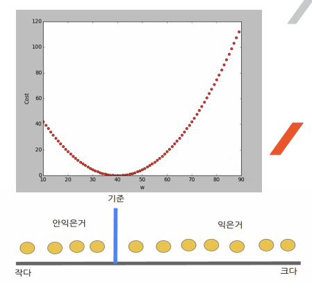
1) Gradient Descent (경사 하강법)
- 오차평면에서 공을 올려 놓았을 때 공이 굴러가는 방향(오차가 적어지는 방향)으로 w를 조정한다.
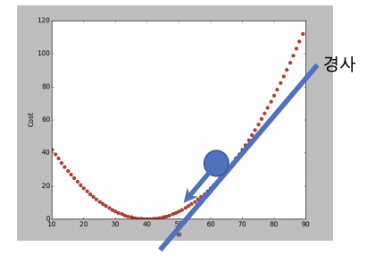
- 경사하강법은 비용함수를 구하고, 이를 각 weight 별로 편미분하면 각 weight 별로 수정할 다음값을 구할수 있다.
- 선형 모델(w1x1 + w2x2 = b)에서는 경사하강법의 결과가 직관적으로 설명했던 방법과 동일하다.
결국 사과예에서 학습한 방법은 경사하강법을 사용한 것이다.
경사하강법 알고리즘들
SGD, Momentum, NAG, Adagrad, Adadelta, Rmsprop
Cost가 낮은 쪽으로 이동하는 weight를 찾는 것 (학습)
신경망
1. Perceptron(퍼셉트론)
1) 선형분리의 문제를 학습할 수 있다.
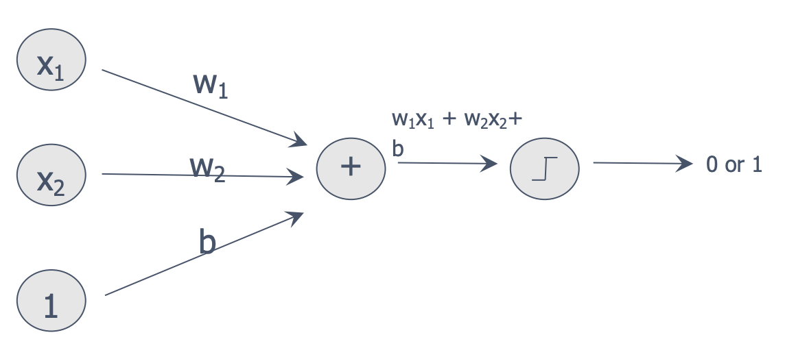
2) 퍼셉트론의 한계
- 간단한 XOR도 못한다.
- 선형분리가 불가능한 것은 풀지 못한다.
- XOR은 선형분리로 풀지못하는 문제이다.
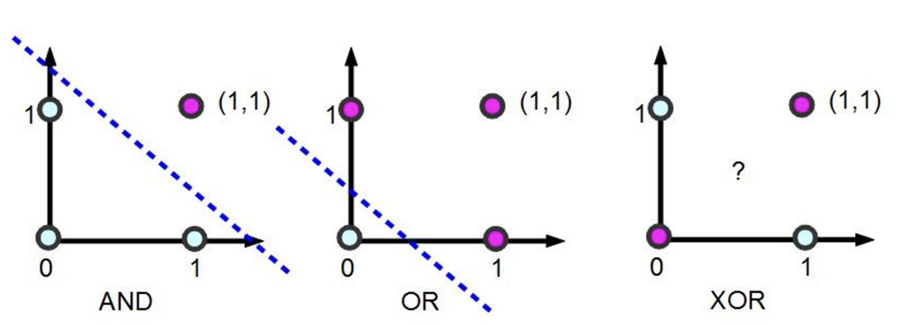
3) 선형분리 불가 문제의 해결법
- 입력차원을 늘린다.
- 입력을 비선형 변환하여 선형 분리 가능하도록 한다.
- MLP
4) MLP (Mulit Layer Perceptron)
- 입력과 출력 사이에 층이 더 있다
- 개별 perceptron의 결과를 다음 층의 입력으로 사용하고 결과적으로 선형 분리의 제약을 극복한다.
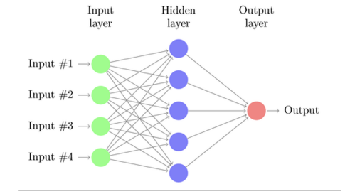
5) 퍼셉트론의 능력
- 1개의 퍼셉트론은 1개의 선형 분리를 할 수 있다.
- 퍼셉트론의 결과를 다른 퍼셉트론의 입력으로 하면 여러개의 선으로 분리 할 수 있다.
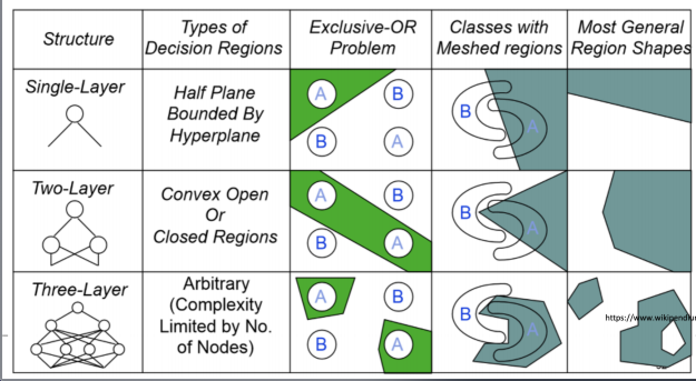
6) 숫자 인식의 예
- 이미지를 구성하는 pixel의 각 값으로 구성된 입력벡터를 NN의 입력으로 한다.
- 그리고 학습시 해당 출력 노드만 1로 하고, 나머지는 0으로 학습
- test 시에는 출력 노드중 최대값을 가진것으로 인식
함수 근사화 능력
1. DNN의 능력
Universal Approximator - 어떤 함수도 근사화 할 수 있다.
DNN의 함수 근사화 능력
- 함수의 내부를 모르더라도 입력과 출력 데이터로 DNN은 임의의 함수를 근사화 할 수 있다.
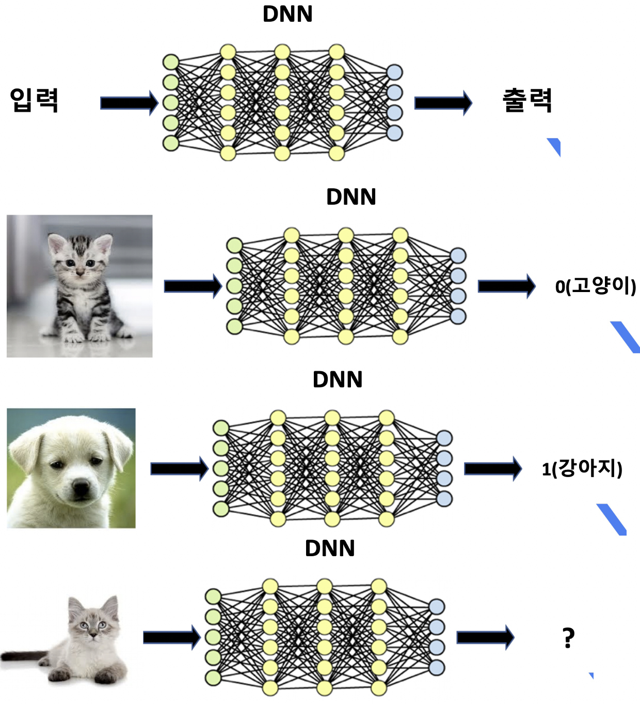
1) 함수를 근사화 한 것이다.
- 고양이, 강아지 구분 함수
- 어떻게 구분하는지는 정의하지 않았다.
- 정의하기는 힘들어도, 그 함수는 존재한다.
- 단순한 입출력 쌍 데이터로 그 함수를 근사화 하였다.
2) 단순하지만 강력한 방법
- 단순히 입출력 쌍을 반복하여 학습시킨다. 입력 -> 학습 -> 출력
- 얼굴인식, 물체인식 같은 로직을 찾아내기 어려운 문제에는 아주 효과적이다.
고양이, 개 --> DNN --> 고양이
음파 --> DNN --> "안녕하세요"
시스템 데이터 --> DNN --> 정상/비정상
바둑 --> DNN --> 다음수
hello --> DNN --> 안녕하세요
2. 딥러닝
- DNN은 함수 근사화 능력이 있다.
- 입출력 쌍을 반복적으로 제공하여 내부를 업데이트 한다.
- 충분한 입축력 데이터와 컴퓨팅 파워를 필요로 한다.
- DNN으로 특정 함수 근사화 하는 것을 딥러닝이라고 한다.
인공지능, 머신러닝, 딥러닝
1. 인공지능 (AI : Artificial intelligence)
- 사람이 아닌 기계가 알아서 하면 인공지능이다.
- 전문가의 지식을 기반으로 하거나 (전문가시스템), 데이터를 기반으로 하거나(머신러닝)
2. 머신러닝 (ML : Machine Learning)
- 인공지능의 한 분야
- 데이터에서 가치를 찾아내는 것
- SVM, 의사결정트리, Random Forest, Bayesian, K-Means Clustering, K-NN, Neurl Network
3. 딥러닝 (DL : Deep Learning)
- 신경망 ( NN : Neural Network)을 사용한 머신러닝 방법
- 신경망의 은닉층이 많아서 (deep) DNN(Deep NN, 심층신경망) 이라고 부른다.
- 신경망(NN)과 심층신경망(DNN)은 별차이가 없다.
- 근래에 뚜렷한 성과를 보이면서 다시 큰 관심을 보이기 시작했다.
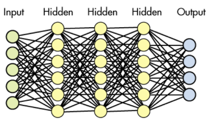
4. AI, ML, DL
- 인간이 고안한 알고리즘이거 기계가 학습한 알고리즘 이건, 기계가 스스로 처리하면 AI
- 데이터기반으로 기계학습을 하면 ML
- 그중 신경망으로 사용하는것이 DL
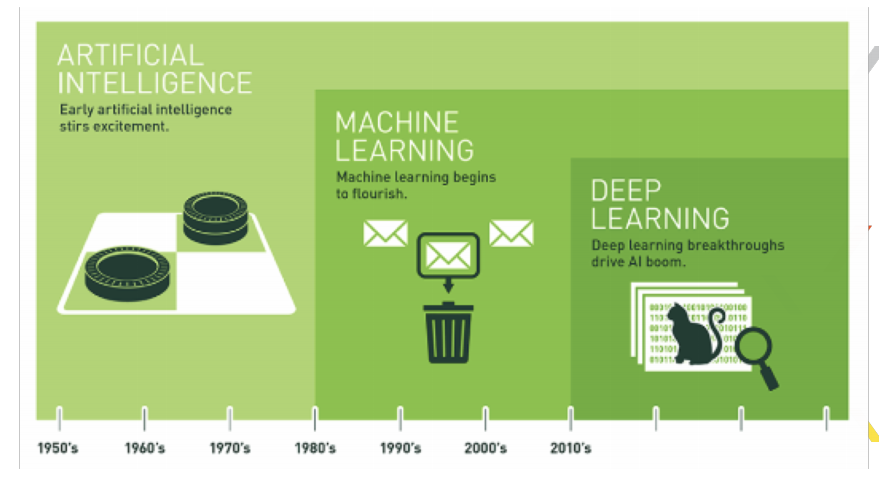